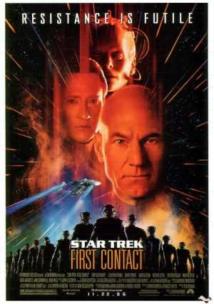
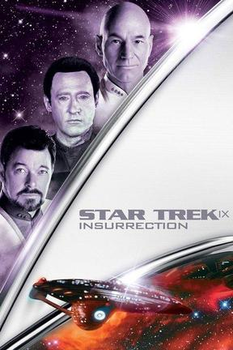
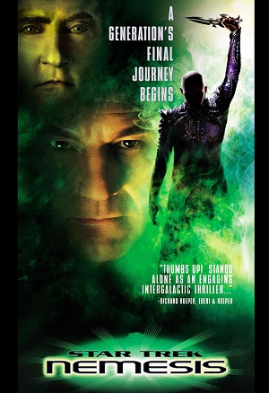

| Movie | Box Office | Rating |
|---|---|---|
| 118M$ | 4 |
Star Trek Generations recieved a 4 out of 10 rating. Some resons why it recieved its score:
| Movie | Box Office | Rating |
|---|---|---|
|  | 146M$ | 7 |
Star Trek First Contact rates a little higher with a 7 out of 10. First Contact would have made a better episode than a movie,
and would've been a much better ending for Star Trek: The Next Generation as a series.
| Movie | Box Office | Rating |
|---|---|---|
|  | 117M$ | 5 |
We can't in good conscience rate Star Trek Insurrection lower than Generations, but we can point out it's very serious plot flaws.
| Movie | Box Office | Rating |
|---|---|---|
|  | 67M$ | 8 |
Star Trek Nemesis is the best of the four Star Trek: The Next Generation movies. So many cathartic experiences, kind of.